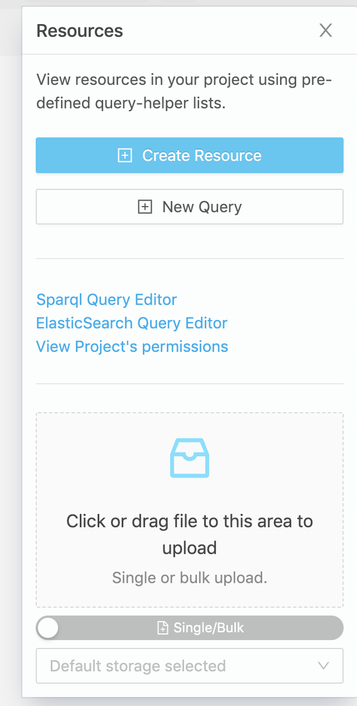
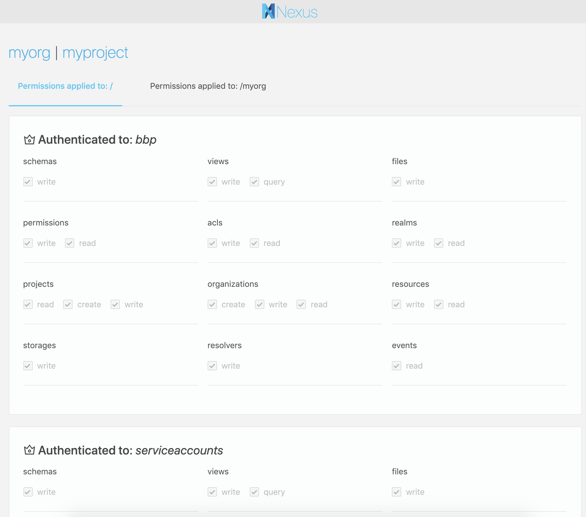
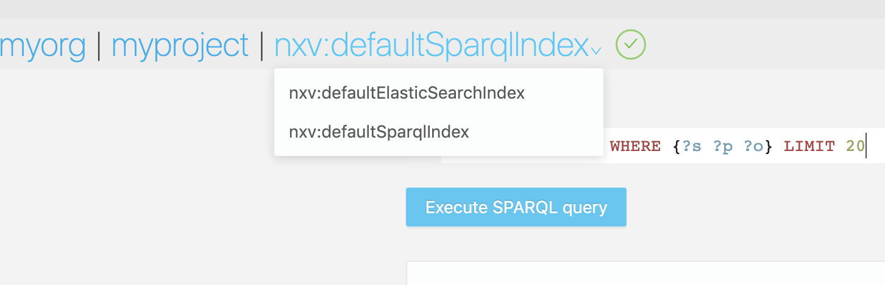

v1.1 Release Notes
This is an incremental software release that adds several improvements across the board. The API is backwards compatible to v1.0 but the cassandra store and indices require a migration due to changes in the underlying event model and resource representation. If you are updating from v1.0 please follow the migration instructions.
Highlights
The goal of this release is to expose the event log through an API and to provide a configurable storage where to save files. These two key features enables users to
- Build custom applications based on Nexus event log .
- Save files in different storage backends (S3, POSIX compatible, local File System).
Service event logs
Services now expose new API endpoints to replay their global event log or the virtual event logs specific to certain resource types or scope (organization, project). This new API allows building applications that integrate with Nexus to provide custom functionality for the data stored in the system. It allows applications to listen to events as they are emitted and react accordingly.
An example application would be a custom index for data within a project where as new resources or updates are recorded in Nexus, the application is notified and updates the appropriate index.
The implementation follows the Server Sent Events specification and gives clients the responsibility of maintaining a cursor while replaying an event log. The event log is exposed over HTTP in a JSON-LD event representation.
The new endpoints require proof of identity by passing within the Authorization header a ‘‘Bearer’’ token. An Anonymous identity is assumed if the client does not pass a token.
Example:
curl -s -H "Authorization: Bearer $TOKEN" "http://localhost/v1/resources/myorg/myproj/events"
data:{"@context":"https://bluebrain.github.io/nexus/contexts/resource.json","@type":"Updated","_resourceId":"http://localhost/v1/resources/myorg/myproj/_/7fb43a6a-33f2-4106-8cb3-531f2d67c1e3","_source":{"@context":{"@base":"http://localhost/v1/resources/myorg/myproj/_/","@vocab":"http://schema.org/"},"@id":"7fb43a6a-33f2-4106-8cb3-531f2d67c1e3","@type":"Person","age":34,"name":"John Doe"},"_types":["http://schema.org/Person"],"_projectUuid":"fadc3e6c-fca0-45d8-b65c-a984a012c689","_organizationUuid":"d363ee88-5426-420a-8078-f8e9d9652fe9","_rev":2,"_instant":"2019-07-24T10:58:03.830114Z","_subject":"http://localhost/v1/anonymous"}
event:Updated
id:e8fac660-ae01-11e9-b31a-71e2858070d7
data:
^C
Full service event logs
Designed primarily for applications that aim to be extensions to Nexus, the following service specific endpoints have been added. It is assumed that these endpoints would not be consumed by browsers or command line clients, but rather stateful applications that run within the same network. If that not the case, the deployment requires a proxy that does URL rewriting to avoid the path collision.
http(s)://{kg_service_address}/v1/events; exposes the entire event log of the KG service; requiresevents/readpermission on/.http(s)://{admin_service_address}/v1/events; exposes the entire event log of the Admin service; requiresevents/readpermission on/.http(s)://{iam_service_address}/v1/events; exposes the entire event log of the KG service; requiresevents/readpermission on/.http(s)://{nexus_address}/v1/events; exposes the entire event log of the KG service; requiresevents/readpermission on/.
Resource specific event logs
Designed primarily for applications that target a single resource type or a specific scope, the following endpoints have been added:
http(s)://{nexus_address}/v1/permissions/events; exposes the event log for permissions; requirespermissions/readpermission on/.http(s)://{nexus_address}/v1/realms/events; exposes the event log for realms; requiresrealms/readpermission on/.http(s)://{nexus_address}/v1/acls/events; exposes the event log for access control lists; requiresacls/readpermission on/.http(s)://{nexus_address}/v1/orgs/events; exposes the event log for organizations; requiresorganizations/readpermission on/.http(s)://{nexus_address}/v1/projects/events; exposes the event log for projects; requiresprojects/readpermission on/.http(s)://{nexus_address}/v1/resources/{org}/events; exposes the event log for all resources in the selected organization; requiresresources/readpermission on/{org}.http(s)://{nexus_address}/v1/resources/{org}/{project}/events; exposes the event log for all resources in the selected project; requiresresources/readpermission on/{org}/{project}.
Configurable storage backends
Prior to this release the KG service used an implicit storage medium, a filesystem directory (either local or mounted) accessible by the service. We’ve noticed, however, both internally and through questions raised by organizations using Nexus that certain usecases require a higher degree of control on how data is stored and managed by the system.
An example of that is registering fairly large files into Nexus; performing a file upload just for the purpose of recording the file location and checksum is not efficient, especially in cases where the existing files are present on the same storage medium as the one mounted for use by Nexus.
To address this issue the new release introduces a new resource type specific to KG that controls the configuration of storage mediums in Nexus on a project basis. The new resource type is called Storage with three sub-types: DiskStorage, RemoteDiskStorage, S3Storage and uses the /v1/storage resource type specific endpoint.
Each project can be configured with multiple storage resources. Creating a storage resource requires storages/write permission on the target project or inherited from the parent organization or /.
See the storages API for more information.
Additionally, a new file operation has been introduced that allows registering an existing file (already present on that storage) into the system just by specifying its name, path, mediaType and optionally a storage identifier to be used:
curl -s -XPUT "http://localhost/v1/files/myorg/myproj/myfile.png?storage=mystorage" -d \
'{
"filename": "myfile.png",
"path": "relative/path/to/myfile.png",
"mediaType": "image/png"
}'
DiskStorage
When new projects are being created, a new DiskStorage resource is automatically created for that project and set as default, thus preserving the previous behaviour. Additionally new configuration options have been implemented:
default: boolean, mandatory, whether the storage resource is the default one for a projectvolume: string, mandatory, the root filesystem directory where Nexus can store files for this projectmaxFileSize: int, optional, the maximum file size (in bytes) allowed for clients to uploadreadPermission: string, optional, defaults toresources/read, the permission required for downloading files from this storage mediumwritePermission: string, optional, defaults tofiles/write, the permission required for uploading files to this storage medium
Arbitrary permissions can be used as values for readPermission and writePermission as long as they are defined in the global permission collection (/v1/permissions).
RemoteDiskStorage
This storage type relies on a remote HTTP service that exposes basic file operations of an underlying POSIX file-system. In terms of deployment configuration it allows separating the Nexus and the storage mediums in different networks and possibly physical locations. An example usecase is running a distributed network storage (such as Ceph, Gluster, GPFS, Lustre, …) that can’t or shouldn’t be mounted directly on the system where Nexus runs.
The following configuration options are available for this storage type:
default: boolean, mandatory, whether the storage resource is the default one for a projectendpoint: string, optional, the base address of the remote disk storage integration service, defaults to the value set in the environment variables of KGcredentials: string, optional, the oauth2 bearer token to be used for authenticating to the remote disk storage integration service, defaults to the value set in the environment variables of KGfolder: string, mandatory, the name of the folder where files are to be stored for this projectmaxFileSize: int, optional, the maximum file size (in bytes) allowed for clients to uploadreadPermission: string, optional, defaults toresources/read, the permission required for downloading files from this storage mediumwritePermission: string, optional, defaults tofiles/write, the permission required for uploading files to this storage medium
S3Storage
This storage type (S3Storage) allows the use S3 compatible object storage as a backend.
The following configuration options are available for this storage type:
default: boolean, mandatory, whether the storage resource is the default one for a projectbucket: string, mandatory, the name of the s3 bucket where files are to be storedendpoint: string, optional, the s3 storage endpoint, defaulting tos3.amazonaws.comaccessKey: string, optional, the access key to be used for authenticating to the servicesecretKey: string, optional, the secret key to be used for authenticating to the service, defaults to the value set in the environment variables of KGmaxFileSize: int, optional, the maximum file size (in bytes) allowed for clients to uploadreadPermission: string, optional, defaults toresources/read, the permission required for downloading files from this storage mediumwritePermission: string, optional, defaults tofiles/write, the permission required for uploading files to this storage medium
Stable ElasticSearch views
Both ElasticSearchView and AggregateElasticSearchView have been promoted from alpha to stable. Creation or update no longer require the use of the Alpha type to be provided.
New configuration options have been introduced for ElasticSearchView: resourceTypes and includeDeprecated. These options allow a finer grain filtering of the resources considered for indexing by the view.
Configurable SparqlView
The SparqlView has been promoted from alpha to stable. Creation or update no longer require the use of the Alpha type to be provided.
Configuration options have been introduced such that it is consistent with the ElasticSearchView:
resourceSchemas: array of ids, optional, defaults to empty, configures the view to consider for indexing only the resources constrained by any of the specified schemas; an empty array implies all resources.resourceTypes: array of ids, optional, defaults to empty, configures the view to consider for indexing only the the resources that have at least one of the specified types at the revision selected by thetagoption; if atagis not specified, the latest revision is assumed.tag: string, optional, selects only the resources that are tagged with the provided value; the tagged revision is considered for indexing.includeMetadata: boolean, optional, defaults to false, configures the view to index resources without injecting the resource metadata in the resource graph.includeDeprecated: boolean, optional, defaults to true, configures the view to include or exclude the deprecated resources.
AggregateSparqlView
A new view type has been introduced (AggregateSparqlView), the dual of AggregateElasticSearchView that allows for query time aggregation of results. The configuration is mostly identical to the AggregateElasticSearchView which is merely a set of SparqlView references:
{
"@id": "{someid}",
"@type": [ "View", "AggregateSparqlView"],
"views": [
{
"project": "{project}",
"viewId": "{viewId}"
},
...
]
}
Note: this is not implemented in terms of SPARQL Federation but just simple result aggregation. The query sent to this view is dispatched to all BlazeGraph namespaces and the results are aggregated without preserving the view order. The implication is that triples in one namespace cannot be filtered using predicates from another namespace, furthermore, path traversals cannot be performed between the selected namespaces.
As with the AggregateElasticSearchView since the subject that creates an aggregate view may be different than the subject that queries the view, before dispatching the query the target namespaces are filtered based on the permissions of the caller for each individual view. This behaviour is completely transparent to the client.
Index progress
Indexing in Nexus is asynchronous, meaning once a resource is created or modified the change is not immediately visible in the respective indices (maintained by the views). The reason for this asynchrony is to break the coupling between the stores (Cassandra, ElasticSearch, BlazeGraph) during a client request. This provides many benefits:
- reduces the latency of write operations
- requests succeed regardless of the availability of the secondary stores
- transient failures while indexing can be retried
- indices can be rebuilt at will (through project, view updates or by resetting the indexing progress and restarting the service)
- no synchronization is needed between view management and resource write operations
Unfortunately the index progress for each view was not made available to clients which meant users had no way of knowing if their queries hit an index while it was rebuilt or stale.
All views have now been updated to expose a statistics sub-resource that provides information on the state of indexing:
curl -s -H "Authorization: Bearer $TOKEN" "http://localhost/v1/views/myorg/myproj/nxv:defaultElasticSearchIndex/statistics" | jq
{
"@context": "https://bluebrain.github.io/nexus/contexts/view.json",
"delayInSeconds": 0,
"discardedEvents": 0,
"evaluatedEvents": 585721,
"lastEventDateTime": "2019-08-06T08:47:20.958Z",
"lastProcessedEventDateTime": "2019-08-06T08:47:20.545Z",
"processedEvents": 585721,
"remainingEvents": 1,
"totalEvents": 585722
}
… where:
totalEvents: total number of events in the projectprocessedEvents: number of events that have been considered by the viewremainingEvents: number of events that remain to be considered by the viewdiscardedEvents: number of events that have been discarded (were not evaluated due to filters, e.g. did not match schema, tag or type defined in the view)evaluatedEvents: number of events that have been used to update an indexlastEventDateTime: timestamp of the last event in the projectlastProcessedEventDateTime: timestamp of the last event processed by the viewdelayInSeconds: number of seconds between the last processed event timestamp and the last known event timestamp
Additionally the service maintains and exposes counters and gauges for monitoring with Prometheus such that data ingestion and indexing velocity and global event counts can be monitored.
For example, the query:
kg_indexer_gauge{project="myorg/myproj"}
… yields:
Element Value
kg_indexer_gauge{instance="localhost:9095",job="kg",organization="myorg",project="myorg/myproj",type="elasticsearch",viewId="https://bluebrain.github.io/nexus/vocabulary/defaultElasticSearchIndex"} 585721
kg_indexer_gauge{instance="localhost:9095",job="kg",organization="myorg",project="myorg/myproj",type="eventCount"} 585722
kg_indexer_gauge{instance="localhost:9095",job="kg",organization="myorg",project="myorg/myproj",type="sparql",viewId="https://bluebrain.github.io/nexus/vocabulary/defaultSparqlIndex"} 585617
Other API Improvements
The release contains numerous improvements to the API, the most significant being the following.
Resource content negotiation
Added DOT, n-triples formats and compacted/expanded variants for json-ld. The selection of the format is done via the Accept header value and in case of application/ld+json the query param format with compacted or expanded values.
DOT representation is requested using the text/vnd.graphviz value for the Accept header:
curl -s -H "Authorization: Bearer $TOKEN" \
-H "Accept: text/vnd.graphviz" \
"http://localhost/v1/resources/myorg/myproj/_/7fb43a6a-33f2-4106-8cb3-531f2d67c1e3"
digraph {
"http://localhost/v1/resources/myorg/myproj/_/7fb43a6a-33f2-4106-8cb3-531f2d67c1e3" -> "http://localhost/v1/resources/myorg/myproj/_/7fb43a6a-33f2-4106-8cb3-531f2d67c1e3/outgoing" [label = "https://bluebrain.github.io/nexus/vocabulary/outgoing"]
"http://localhost/v1/resources/myorg/myproj/_/7fb43a6a-33f2-4106-8cb3-531f2d67c1e3" -> "2019-07-24T10:58:03.830114Z" [label = "https://bluebrain.github.io/nexus/vocabulary/updatedAt"]
"http://localhost/v1/resources/myorg/myproj/_/7fb43a6a-33f2-4106-8cb3-531f2d67c1e3" -> "John Doe" [label = "http://schema.org/name"]
"http://localhost/v1/resources/myorg/myproj/_/7fb43a6a-33f2-4106-8cb3-531f2d67c1e3" -> "http://localhost/v1/resources/myorg/myproj/_/7fb43a6a-33f2-4106-8cb3-531f2d67c1e3/incoming" [label = "https://bluebrain.github.io/nexus/vocabulary/incoming"]
"http://localhost/v1/resources/myorg/myproj/_/7fb43a6a-33f2-4106-8cb3-531f2d67c1e3" -> "2019-02-05T12:52:05.510Z" [label = "https://bluebrain.github.io/nexus/vocabulary/createdAt"]
"http://localhost/v1/resources/myorg/myproj/_/7fb43a6a-33f2-4106-8cb3-531f2d67c1e3" -> "http://localhost/v1/anonymous" [label = "https://bluebrain.github.io/nexus/vocabulary/updatedBy"]
"http://localhost/v1/resources/myorg/myproj/_/7fb43a6a-33f2-4106-8cb3-531f2d67c1e3" -> "http://localhost/v1/resources/myorg/myproj/_/7fb43a6a-33f2-4106-8cb3-531f2d67c1e3" [label = "https://bluebrain.github.io/nexus/vocabulary/self"]
"http://localhost/v1/resources/myorg/myproj/_/7fb43a6a-33f2-4106-8cb3-531f2d67c1e3" -> 34 [label = "http://schema.org/age"]
"http://localhost/v1/resources/myorg/myproj/_/7fb43a6a-33f2-4106-8cb3-531f2d67c1e3" -> 2 [label = "https://bluebrain.github.io/nexus/vocabulary/rev"]
"http://localhost/v1/resources/myorg/myproj/_/7fb43a6a-33f2-4106-8cb3-531f2d67c1e3" -> false [label = "https://bluebrain.github.io/nexus/vocabulary/deprecated"]
"http://localhost/v1/resources/myorg/myproj/_/7fb43a6a-33f2-4106-8cb3-531f2d67c1e3" -> "https://bluebrain.github.io/nexus/schemas/unconstrained.json" [label = "https://bluebrain.github.io/nexus/vocabulary/constrainedBy"]
"http://localhost/v1/resources/myorg/myproj/_/7fb43a6a-33f2-4106-8cb3-531f2d67c1e3" -> "http://localhost/v1/anonymous" [label = "https://bluebrain.github.io/nexus/vocabulary/createdBy"]
"http://localhost/v1/resources/myorg/myproj/_/7fb43a6a-33f2-4106-8cb3-531f2d67c1e3" -> "http://localhost/v1/projects/myorg/myproj" [label = "https://bluebrain.github.io/nexus/vocabulary/project"]
"http://localhost/v1/resources/myorg/myproj/_/7fb43a6a-33f2-4106-8cb3-531f2d67c1e3" -> "http://schema.org/Person" [label = "http://www.w3.org/1999/02/22-rdf-syntax-ns#type"]
}
N-triples representation is requested using the application/n-triples value for the Accept header:
curl -s -H "Authorization: Bearer $TOKEN" \
-H "Accept: application/n-triples" \
"http://localhost/v1/resources/myorg/myproj/_/7fb43a6a-33f2-4106-8cb3-531f2d67c1e3"
<http://localhost/v1/resources/myorg/myproj/_/7fb43a6a-33f2-4106-8cb3-531f2d67c1e3> <https://bluebrain.github.io/nexus/vocabulary/updatedAt> "2019-07-24T10:58:03.830114Z"^^<http://www.w3.org/2001/XMLSchema#dateTime> .
<http://localhost/v1/resources/myorg/myproj/_/7fb43a6a-33f2-4106-8cb3-531f2d67c1e3> <https://bluebrain.github.io/nexus/vocabulary/createdAt> "2019-02-05T12:52:05.510Z"^^<http://www.w3.org/2001/XMLSchema#dateTime> .
<http://localhost/v1/resources/myorg/myproj/_/7fb43a6a-33f2-4106-8cb3-531f2d67c1e3> <https://bluebrain.github.io/nexus/vocabulary/createdBy> "http://localhost/v1/anonymous" .
<http://localhost/v1/resources/myorg/myproj/_/7fb43a6a-33f2-4106-8cb3-531f2d67c1e3> <https://bluebrain.github.io/nexus/vocabulary/constrainedBy> <https://bluebrain.github.io/nexus/schemas/unconstrained.json> .
<http://localhost/v1/resources/myorg/myproj/_/7fb43a6a-33f2-4106-8cb3-531f2d67c1e3> <https://bluebrain.github.io/nexus/vocabulary/outgoing> "http://localhost/v1/resources/myorg/myproj/_/7fb43a6a-33f2-4106-8cb3-531f2d67c1e3/outgoing" .
<http://localhost/v1/resources/myorg/myproj/_/7fb43a6a-33f2-4106-8cb3-531f2d67c1e3> <http://www.w3.org/1999/02/22-rdf-syntax-ns#type> <http://schema.org/Person> .
<http://localhost/v1/resources/myorg/myproj/_/7fb43a6a-33f2-4106-8cb3-531f2d67c1e3> <https://bluebrain.github.io/nexus/vocabulary/updatedBy> "http://localhost/v1/anonymous" .
<http://localhost/v1/resources/myorg/myproj/_/7fb43a6a-33f2-4106-8cb3-531f2d67c1e3> <https://bluebrain.github.io/nexus/vocabulary/deprecated> "false"^^<http://www.w3.org/2001/XMLSchema#boolean> .
<http://localhost/v1/resources/myorg/myproj/_/7fb43a6a-33f2-4106-8cb3-531f2d67c1e3> <https://bluebrain.github.io/nexus/vocabulary/project> <http://localhost/v1/projects/myorg/myproj> .
<http://localhost/v1/resources/myorg/myproj/_/7fb43a6a-33f2-4106-8cb3-531f2d67c1e3> <http://schema.org/age> "34"^^<http://www.w3.org/2001/XMLSchema#integer> .
<http://localhost/v1/resources/myorg/myproj/_/7fb43a6a-33f2-4106-8cb3-531f2d67c1e3> <https://bluebrain.github.io/nexus/vocabulary/incoming> "http://localhost/v1/resources/myorg/myproj/_/7fb43a6a-33f2-4106-8cb3-531f2d67c1e3/incoming" .
<http://localhost/v1/resources/myorg/myproj/_/7fb43a6a-33f2-4106-8cb3-531f2d67c1e3> <https://bluebrain.github.io/nexus/vocabulary/self> "http://localhost/v1/resources/myorg/myproj/_/7fb43a6a-33f2-4106-8cb3-531f2d67c1e3" .
<http://localhost/v1/resources/myorg/myproj/_/7fb43a6a-33f2-4106-8cb3-531f2d67c1e3> <https://bluebrain.github.io/nexus/vocabulary/rev> "2"^^<http://www.w3.org/2001/XMLSchema#long> .
<http://localhost/v1/resources/myorg/myproj/_/7fb43a6a-33f2-4106-8cb3-531f2d67c1e3> <http://schema.org/name> "John Doe" .
The default representation for application/ld+json is compacted. Passing along the ?format=expanded removes the context from the resource:
curl -s -H "Authorization: Bearer $TOKEN" \
-H "Accept: application/ld+json" \
"http://localhost/v1/resources/myorg/myproj/_/7fb43a6a-33f2-4106-8cb3-531f2d67c1e3?format=expanded" | jq
{
"@id": "http://localhost/v1/resources/myorg/myproj/_/7fb43a6a-33f2-4106-8cb3-531f2d67c1e3",
"@type": "http://schema.org/Person",
"http://schema.org/age": 34,
"http://schema.org/name": "John Doe",
"https://bluebrain.github.io/nexus/vocabulary/constrainedBy": {
"@id": "https://bluebrain.github.io/nexus/schemas/unconstrained.json"
},
"https://bluebrain.github.io/nexus/vocabulary/createdAt": "2019-02-05T12:52:05.510Z",
"https://bluebrain.github.io/nexus/vocabulary/createdBy": "http://localhost/v1/anonymous",
"https://bluebrain.github.io/nexus/vocabulary/deprecated": false,
"https://bluebrain.github.io/nexus/vocabulary/incoming": "http://localhost/v1/resources/myorg/myproj/_/7fb43a6a-33f2-4106-8cb3-531f2d67c1e3/incoming",
"https://bluebrain.github.io/nexus/vocabulary/outgoing": "http://localhost/v1/resources/myorg/myproj/_/7fb43a6a-33f2-4106-8cb3-531f2d67c1e3/outgoing",
"https://bluebrain.github.io/nexus/vocabulary/project": {
"@id": "http://localhost/v1/projects/myorg/myproj"
},
"https://bluebrain.github.io/nexus/vocabulary/rev": 2,
"https://bluebrain.github.io/nexus/vocabulary/self": "http://localhost/v1/resources/myorg/myproj/_/7fb43a6a-33f2-4106-8cb3-531f2d67c1e3",
"https://bluebrain.github.io/nexus/vocabulary/updatedAt": "2019-07-24T10:58:03.830114Z",
"https://bluebrain.github.io/nexus/vocabulary/updatedBy": "http://localhost/v1/anonymous"
}
Additional query params in listings
Listing resources now support additional query parameters, namely: type, rev, deprecated, createdBy and updatedBy. This is applies for any resource types (files, schemas, resolvers, storages, views or plain resources).
The general form is:
GET /v1/resources/{org_label}/{project_label}?from={from}&size={size}&deprecated={deprecated}&rev={rev}&type={type}&createdBy={createdBy}&updatedBy={updatedBy}&schema={schema}&q={q}
… where:
{from}: number, the parameter that describes the offset for the current query; defaults to 0{size}: number, the parameter that limits the number of results; defaults to 20{deprecated}: boolean, can be used to filter the resulting resources based on their deprecation status{rev}: number, can be used to filter the resulting resources based on their revision value{type}: iri, can be used to filter the resulting resources based on their @type value. This parameter can appear multiple times, filtering further the @type value.{createdBy}: iri, can be used to filter the resulting resources based on their creator{updatedBy}: iri, can be used to filter the resulting resources based on the person which performed the last update{schema}: iri, can be used to filter the resulting resources based on the conformant schema{q}: string, can be provided to select only the resources in the collection that have attribute values matching (containing) the provided string
Incoming and Outgoing links
The incoming and outgoing sub-resources have been added to all resources in KG such that the provide a listing of known relationships of the current resource.
The general forms are:
GET /v1/resources/{org_label}/{project_label}/{schema_id}/{resource_id}/incoming?from={from}&size={size}
GET /v1/resources/{org_label}/{project_label}/{schema_id}/{resource_id}/outgoing?from={from}&size={size}&includeExternalLinks={includeExternalLinks}
… where:
{from}: number, the parameter that describes the offset for the current query; defaults to 0{size}: number, the parameter that limits the number of results; defaults to 20{includeExternalLinks}: boolean, flag to decide whether or not external links are to be included; external links are references to resources in other projects, or even resources external to Nexus; defaults to true
Additionally, the resource metadata now includes links (_incoming and _outgoing) for these endpoints.
For example, considering the following resource:
{
"@context": [
{
"@base": "http://localhost/v1/resources/myorg/myproj/_/",
"@vocab": "http://schema.org/",
"logo": {
"@id": "http://schema.org/logo",
"@type": "@id"
}
},
"https://bluebrain.github.io/nexus/contexts/resource.json"
],
"@id": "7fb43a6a-33f2-4106-8cb3-531f2d67c1e3",
"@type": "Person",
"age": 34,
"logo": "a713b0e4-c745-4a89-a2ad-84b19c244bd5",
"name": "John Doe",
"_self": "http://localhost/v1/resources/myorg/myproj/_/7fb43a6a-33f2-4106-8cb3-531f2d67c1e3",
"_constrainedBy": "https://bluebrain.github.io/nexus/schemas/unconstrained.json",
"_project": "http://localhost/v1/projects/myorg/myproj",
"_rev": 4,
"_deprecated": false,
"_createdAt": "2019-02-05T12:52:05.510Z",
"_createdBy": "http://localhost/v1/anonymous",
"_updatedAt": "2019-08-06T09:53:02.151413Z",
"_updatedBy": "http://localhost/v1/anonymous",
"_incoming": "http://localhost/v1/resources/myorg/myproj/_/7fb43a6a-33f2-4106-8cb3-531f2d67c1e3/incoming",
"_outgoing": "http://localhost/v1/resources/myorg/myproj/_/7fb43a6a-33f2-4106-8cb3-531f2d67c1e3/outgoing"
}
… the outgoing link will return the logo relationship along with the paths, @type and resource metadata:
curl -s -H "Authorization: Bearer $TOKEN" \
"http://localhost/v1/resources/myorg/myproj/_/7fb43a6a-33f2-4106-8cb3-531f2d67c1e3/outgoing" | jq
{
"@context": [
"https://bluebrain.github.io/nexus/contexts/search.json",
"https://bluebrain.github.io/nexus/contexts/resource.json"
],
"_total": 1,
"_results": [
{
"@id": "http://localhost/v1/resources/myorg/myproj/_/a713b0e4-c745-4a89-a2ad-84b19c244bd5",
"@type": "https://bluebrain.github.io/nexus/vocabulary/File",
"paths": "http://schema.org/logo",
"_self": "http://localhost/v1/files/myorg/myproj/http://localhost/v1/resources/myorg/myproj/_/a713b0e4-c745-4a89-a2ad-84b19c244bd5",
"_constrainedBy": "https://bluebrain.github.io/nexus/schemas/file.json",
"_project": "http://localhost/v1/projects/myorg/myproj",
"_rev": 1,
"_deprecated": false,
"_createdAt": "2019-07-24T10:57:32.707Z",
"_createdBy": "http://localhost/v1/anonymous",
"_updatedAt": "2019-07-24T10:57:32.707Z",
"_updatedBy": "http://localhost/v1/anonymous"
}
]
}
Resource id resolution
Resolvers provide means of retrieving dependent resources, but until now they offered no means to see these resources or their origin (i.e. through their metadata).
The release adds the ability to query resolvers or the entire collection of resolvers (respecting their priority) for resource ids such that resolved resources can be viewed.
The general query form is:
GET /v1/resolvers/{org_label}/{project_label}/{resolver_id}/{resource_id}
Additionally, the resolver_id can be omitted (replaced with _) such that the entire collection of non-deprecated resolvers in the project is used to resolve the resource id:
GET /v1/resolvers/{org_label}/{project_label}/_/{resource_id}
The desired tag or revision can be requested via the tag or rev query params. These params are mutually exclusive.
Example, using the default InProject resolver to fetch a specific resource:
curl -s -H "Authorization: Bearer $TOKEN" \
"http://localhost/v1/resolvers/myorg/myproj/_/7fb43a6a-33f2-4106-8cb3-531f2d67c1e3" | jq
{
"@context": [
{
"@base": "http://localhost/v1/resources/myorg/myproj/_/",
"@vocab": "http://schema.org/",
"logo": {
"@id": "http://schema.org/logo",
"@type": "@id"
}
},
"https://bluebrain.github.io/nexus/contexts/resource.json"
],
"@id": "7fb43a6a-33f2-4106-8cb3-531f2d67c1e3",
"@type": "Person",
"age": 34,
"logo": "a713b0e4-c745-4a89-a2ad-84b19c244bd5",
"name": "John Doe",
"_self": "http://localhost/v1/resources/myorg/myproj/_/7fb43a6a-33f2-4106-8cb3-531f2d67c1e3",
"_constrainedBy": "https://bluebrain.github.io/nexus/schemas/unconstrained.json",
"_project": "http://localhost/v1/projects/myorg/myproj",
"_rev": 4,
"_deprecated": false,
"_createdAt": "2019-02-05T12:52:05.510Z",
"_createdBy": "http://localhost/v1/anonymous",
"_updatedAt": "2019-08-06T09:53:02.151413Z",
"_updatedBy": "http://localhost/v1/anonymous",
"_incoming": "http://localhost/v1/resources/myorg/myproj/_/7fb43a6a-33f2-4106-8cb3-531f2d67c1e3/incoming",
"_outgoing": "http://localhost/v1/resources/myorg/myproj/_/7fb43a6a-33f2-4106-8cb3-531f2d67c1e3/outgoing"
}
See resolvers API for more details.
Paginate beyond 10,000 results
The KG service uses ElasticSearch with a default project view to power listing of resources within a project. Due to the restriction set by this store when using from and size resources could not be listed after reaching 10,000 with the applied additional filters.
To address this issue, a new link (_next) has been added to all listing results such that following this link will continue the pagination over the imposed limit; the implementation relies on the searchAfter API which does not suffer from this restriction:
curl -s -H "Authorization: Bearer $TOKEN" "http://localhost/v1/resources/myorg/myproj?size=2" | jq
{
"@context": [
"https://bluebrain.github.io/nexus/contexts/search.json",
"https://bluebrain.github.io/nexus/contexts/resource.json"
],
"_total": 8,
"_results": [{...}, {...}],
"_next": "http://localhost/v1/resources/myorg/myproj?size=2&after=%5B1549370708063,%22https://bluebrain.github.io/nexus/vocabulary/defaultSparqlIndex%22%5D"
}
Following the _next link yields additional two results and a new _next value to continue from there:
curl -s -H "Authorization: Bearer $TOKEN" "http://localhost/v1/resources/myorg/myproj?size=2&after=%5B1549370708063,%22https://bluebrain.github.io/nexus/vocabulary/defaultSparqlIndex%22%5D" | jq
{
"@context": [
"https://bluebrain.github.io/nexus/contexts/search.json",
"https://bluebrain.github.io/nexus/contexts/resource.json"
],
"_total": 8,
"_results": [{...}, {...}],
"_next": "http://localhost/v1/resources/myorg/myproj?size=2&after=%5B1549371125510,%22http://localhost/v1/resources/myorg/myproj/_/7fb43a6a-33f2-4106-8cb3-531f2d67c1e3%22%5D"
}
Organization and Project UUIDs
Internally, the organization and project labels are mapped to UUIDs to allow future functionality to relabel organizations and / or projects. These unique ids are exposed in the organization and project representations and in the event log through Server Sent Events, but until this release there was no way to resolve these UUIDS to organizations and / or projects.
The entire API now accepts UUIDs instead of organization or project segments, for example, getting the project and organization uuid:
curl -s -H "Authorization: Bearer $TOKEN" "http://localhost/v1/projects/myorg/myproj" | jq
{
"@context": [
"https://bluebrain.github.io/nexus/contexts/admin.json",
"https://bluebrain.github.io/nexus/contexts/resource.json"
],
"@id": "http://localhost/v1/projects/myorg/myproj",
"@type": "Project",
"base": "http://localhost/v1/resources/myorg/myproj/_/",
"vocab": "http://schema.org/",
"apiMappings": [],
"_uuid": "fadc3e6c-fca0-45d8-b65c-a984a012c689",
"_label": "myproj",
"_organizationUuid": "d363ee88-5426-420a-8078-f8e9d9652fe9",
"_organizationLabel": "myorg",
"_rev": 3,
"_deprecated": false,
"_createdAt": "2019-02-06T14:57:28.680Z",
"_createdBy": "http://localhost/v1/anonymous",
"_updatedAt": "2019-02-06T14:57:28.680Z",
"_updatedBy": "http://localhost/v1/anonymous"
}
… and using them to list resources:
curl -s -H "Authorization: Bearer $TOKEN" "http://localhost/v1/resources/d363ee88-5426-420a-8078-f8e9d9652fe9/fadc3e6c-fca0-45d8-b65c-a984a012c689?size=2" | jq
{
"@context": [
"https://bluebrain.github.io/nexus/contexts/search.json",
"https://bluebrain.github.io/nexus/contexts/resource.json"
],
"_total": 8,
"_results": [{...}, {...}],
"_next": "http://localhost/v1/resources/d363ee88-5426-420a-8078-f8e9d9652fe9/fadc3e6c-fca0-45d8-b65c-a984a012c689?size=2&after=%5B1549370708063,%22https://bluebrain.github.io/nexus/vocabulary/defaultSparqlIndex%22%5D"
}
Nexus Web improvements
This is the first fully supported version of Nexus Web, now freshly graduated from beta. Its v1.1 version reflects the feature set supporting the Nexus v1.1 release and will be kept in step with that project.
v1.1 Release Notes
Feature highlights
The login page now allows users to select the OpenId Connect provider:

Ability to discriminate between Nexus specific resources (eg. Views, Resolvers) and user created resources:
Display the project ACLs via View Project’s permissions link in the right panel:


Ability to query user defined views, by using the drop-down presented in the query interface and additionally showing the index progress for the selected view (either as a green check if up to date, or a gauge with the percentage otherwise):

Other changes
- The Javascript and Python SDKs and the CLI have been updated to support the additionally introduced functionality.
- The http client in the Python SDK / CLI has been configured to use connection pooling which brings a 4x+ performance boost due to removing the latency penalty for opening new connections.
- The CLI has been updated such that a user can login with username and password if the selected realm and provided client id supports Direct Access Grants. By convention the CLI defaults to
nexus-publicclient. - ElasticSearch compatibility has been updated to 7.x, please see the migration instructions.
- Other Bug Fixes.